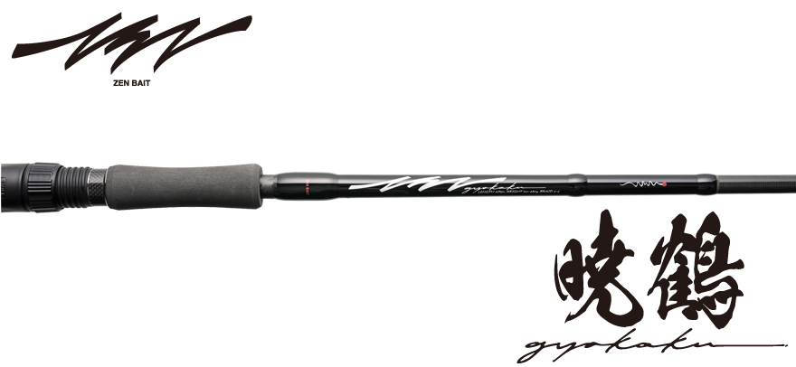
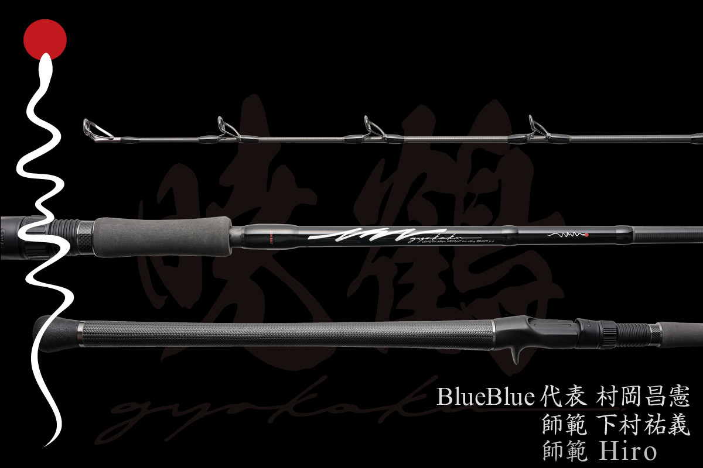

暁鶴（ギョウカク）65XH
（GYOKAKU-65XH）
暁鶴（ギョウカク）65XHは、ブルーブルーが始めたビッグベイトブランド「ZEN BAIT（ゼンベイト）」の第一弾となるベイトロッドです。
BlueBlue代表の村岡昌憲さんが2023年からビッグベイトに本腰を入れ、黎明期からこの釣りをやり込んできた2人の師範とテストを重ねて作りました。60〜280gのビッグベイトを、ベイトタックルに慣れていない人でも投げやすいのが最大の特徴。「最初の1本は、これから。」というコピーのとおり、これからビッグベイトを始める人に向けたロッドです。

画像出典:BlueBlue公式HP
スペック
- メーカー
- BlueBlue（ブルーブルー）／ZEN BAIT
- 開発
- 村岡昌憲・師範 下村祐義・師範 Hiro
- タイプ
- ベイトロッド（ビッグベイト用）
- 全長
- 6ft5in（2ピース）
- 仕舞寸法
- 141cm
- 自重
- 210g
- ルアー重量
- 60〜280g
- PEライン
- 3〜5号
- ガイド
- ステンレスフレームガイド
- 価格
- 60,280円（税込）
- 発売
- 2026年11月
▼今すぐチェック
暁鶴 65XHの特徴
これからビッグベイトを始める人に最適な1本

画像出典:BlueBlue公式HP
-
投げやすいパラボリックなアクション
ロッド全体が曲がるパラボリックなアクションで、重いビッグベイトの重さをロッドに乗せて投げられる。ベイトキャスティングに慣れていない人でも投げやすく、60〜280gと幅広いルアーウェイトをカバーするレングスに設計されている。
-
安心感のある肉厚ブランクス
重いルアーを何度も投げ続け、大きな魚とやり取りするビッグベイトの釣りに合わせた、肉厚のブランクス。扱いやすさと安心感を両立している。
-
頑丈なステンレスフレームガイド
ガイドは頑丈なステンレスフレーム。重いルアーを投げ続ける負担や、過酷な使用環境にも耐える強度と信頼性がある。
ZEN BAITの始動を、村岡昌憲さん自身が紹介している動画です。
出典：マサッチ釣りチャンネル - 村岡昌憲ch -
暁鶴 65XHの使い方
ビッグベイトは、重さを生かしてゆっくり大きく投げるのが基本です。
パラボリックなロッドなので、振りかぶったらロッドがルアーの重さで曲がるのを待ってから、ゆっくり振り抜くイメージで投げるとよく飛びます。力いっぱい振るとバックラッシュの原因になるので、最初はリールのブレーキを強めにして、軽めのビッグベイトから慣れていきましょう。
暁鶴 65XHがおすすめの人
これからビッグベイトでシーバスや青物を狙ってみたい人の、最初の1本におすすめです。
ビッグベイトは大きな魚が釣れる一方で、専用のロッドが無いと投げるのも大変な釣りです。暁鶴はベイトタックルに慣れていない人でも投げやすく、60gから280gまで1本で幅広く使えるので、いろいろなビッグベイトを試しながら釣りを覚えていけます。
ワンポイント
ビッグベイトは、魚が追ってきても見切られることが多い釣りです。追ってきた魚が見えたら、巻くスピードを変えたり、一瞬止めたりして「食わせの間」を作ると、口を使わせやすくなります。偏光サングラスで水中の魚の追い方を見ながら使うと、どんな動きに反応するかが分かってきます。
▼今すぐチェック
暁鶴 65XHとあわせてチェックしたいアイテム
-
 ガチペンライオット155
ブルーブルー
詳細はこちら＞
ガチペンライオット155
ブルーブルー
詳細はこちら＞
70gのビッグペンシル。暁鶴で投げられる重さで、青物やシーバスを水面で狙いたいときに。